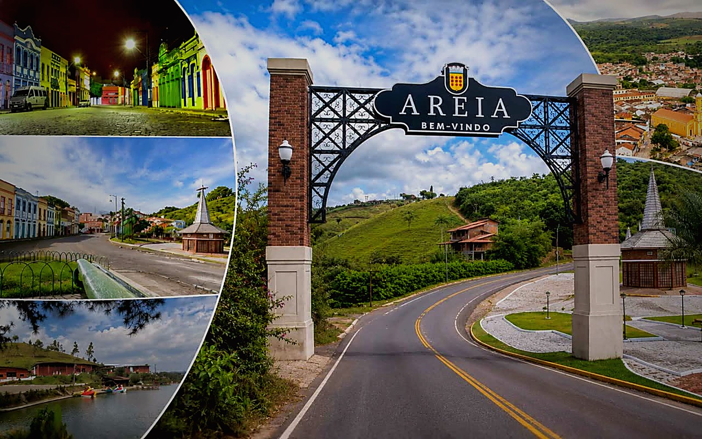
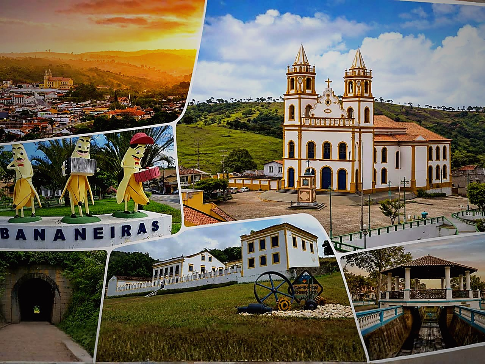
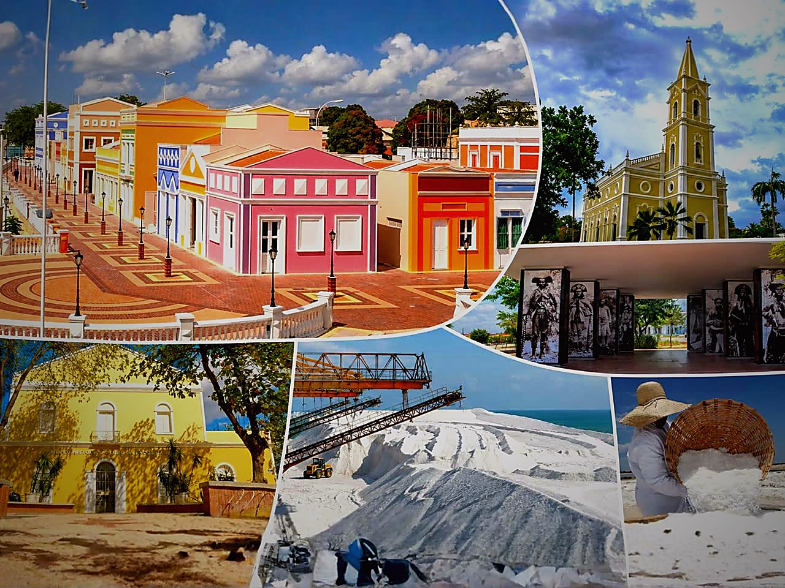
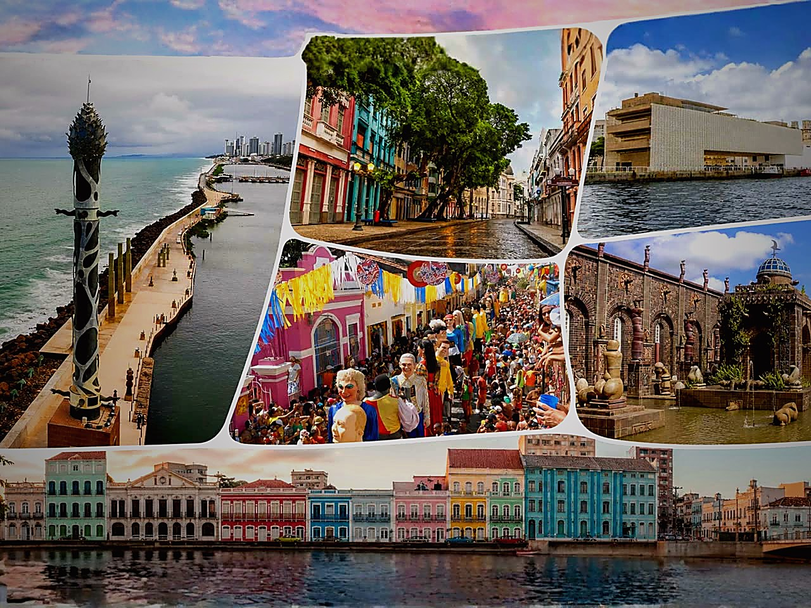
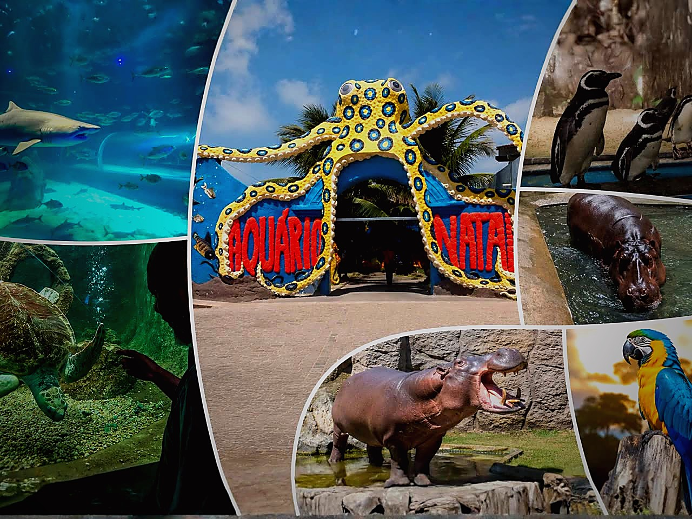

01
Centro histórico
Arquitetura, rua e patrimônio aparecem antes da explicação. O aluno entende o lugar pela observação.
A ideia é usar a mesma linguagem em todo o site: colagem no card de destaque, mini-colagem nos cards comuns e a mesma família visual dentro da página do roteiro.
Uma foto principal segura a promessa do roteiro. As quatro menores mostram variedade: lugar, detalhe, paisagem e experiência.





Casarões, engenhos e memória afro-brasileira para transformar história colonial em leitura de território.
Mesmo padrão, menos espaço. O catálogo ganha consistência e cada roteiro deixa de parecer uma foto solta.
A mesma colagem do catálogo aparece maior no hero. A escola sente continuidade visual: clicou em uma expedição, entrou dentro dela.
Solicitar AgoraEm vez de carrossel escondido, a página usa imagens como parte da narrativa pedagógica.
Arquitetura, rua e patrimônio aparecem antes da explicação. O aluno entende o lugar pela observação.
O ciclo econômico deixa de ser capítulo e vira espaço, trabalho, matéria-prima e memória.
A turma organiza o que viu em diário de campo, pergunta investigativa e atividade pós-saída.
Cada foto aparece dentro de uma parada do roteiro. A imagem ganha função: mostrar o que o aluno observa, investiga e registra.
A primeira imagem abre o contexto: onde a turma está, que paisagem será lida e qual pergunta conduz a observação em campo.
A foto deixa de ser decoração e entra como evidência. O texto aponta o que o aluno deve notar: arquitetura, marcas do tempo e relação com o conteúdo.
No fechamento, a imagem acompanha a conclusão pedagógica: o que mudou na leitura do aluno e como o professor leva isso de volta para a sala.